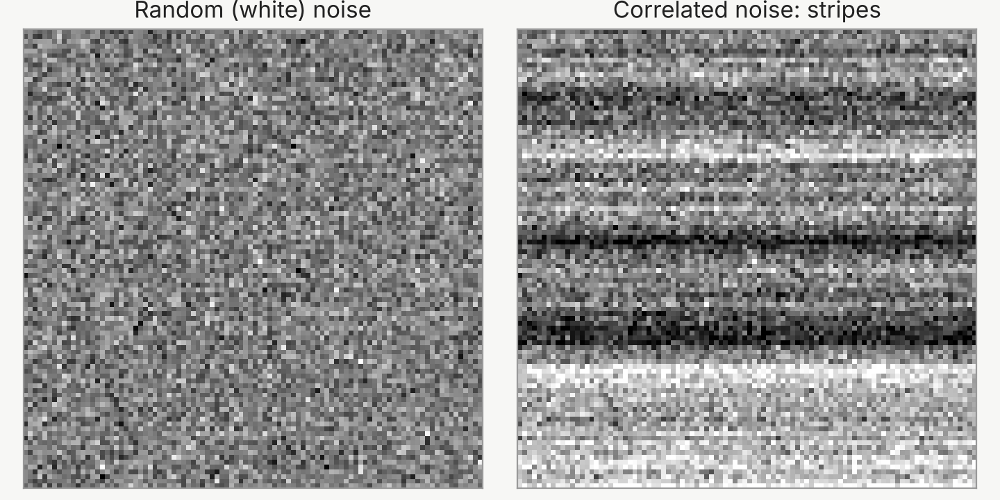

图像 · 图像分析
图像分析
天文图像的物理意义——噪声、探测器效应和系统误差，以及把图像看作连续场的离散采样。
简介
每一张天文图像都混合着信号与缺陷。探测器会引入噪声（noise），有些像素工作异常，数据处理也会留下自己的痕迹。要测量极其微小的效应，比如弱引力透镜（weak gravitational lensing）造成的1%的拉伸，首先必须充分理解这些缺陷，才能为它们建模或把它们去除。
罗曼的红外探测器就是一个例子。它的像素是逐个读出的，因此同一行的像素在很短的时间内相继读出。读出电路中缓慢的漂移会使整行像素一起偏高或偏低，留下微弱的水平条纹。这就是相关噪声（correlated noise）：它不同于随机噪声，即白噪声（white noise），而是为相邻像素所共有，所以合并像素对它的抑制效果要差得多（见下图）。如果不加校正，这些条纹会使图像带上一个优先方向，从而使测得的星系形状产生偏差。把结果始终推向同一方向的误差称为系统误差（systematics）。增加数据量并不能消除它们，所以必须为它们建模或把它们去除。
这项工作背后还有一个更深的问题：像素值究竟意味着什么？与其把它看作一小块方形的天空，不如把它看作天空亮度在某一点上的采样（sampling）；而这个亮度已经被望远镜模糊过，又因像素在整个面积上收集光线而再模糊了一次。把图像看作连续亮度分布的离散采样，是我在这个方向上各项构想的出发点。到目前为止，我参与了团队的几项研究，内容涉及罗曼图像中的噪声以及去除噪声的工具（见下文）。

对这一领域还不熟悉？术语表用通俗的语言解释了相关术语；带下划线的术语都链接到术语表。
我的工作
目前，我在这个方向上的工作是参与团队的研究，对象是模拟罗曼图像中的噪声和系统误差：噪声如何使弱引力透镜测量产生偏差；如何去除相关噪声条纹——团队开发的imDestripe能把条纹在大尺度上的功率降低为原来的十分之一到三十分之一；以及如何实现稳健的测光（photometry），同时利用罗曼和鲁宾天文台的图像——在这项研究中，忽略相关噪声会低估测光的不确定度，最多可低估约三倍。我的贡献主要在于PyIMCOM（其中几项研究都以它为工作平台），以及我在IMCOM方面的专长。
我对图像分析的兴趣，源于我在图像重建方面的工作。在开发“无为”（Effortless）的过程中，我开始认真思考天文图像的物理意义，以及离散采样与连续场之间的关系。
论文
合作论文
- Robust Photometry for Roman High-Latitude Imaging Survey Cosmology Using Roman and Rubin Imaging
· arXiv:2607.09849 · ADS
我贡献了自己在IMCOM方面的专长。 - Removing correlated noise stripes from the Nancy Grace Roman Space Telescope survey images
· DOI · arXiv:2512.05949 · ADS · 代码
我主导开发了这项工作所用的平台——PyIMCOM软件，并对稿件提出了意见。 - OpenUniverse2024: A shared, simulated view of the sky for the next generation of cosmological surveys
· DOI · arXiv:2501.05632 · ADS
我主导开发了用于生成IMCOM协加图像的PyIMCOM软件，并参与了论文的撰写。 - Analysis of biasing from noise from the Nancy Grace Roman Space Telescope: implications for weak lensing
· DOI · arXiv:2410.11088 · ADS
我主导开发了用于合并图像的PyIMCOM软件，参与了数据分析方法的讨论，并对稿件提出了意见。
下一步
“无拘”（Fetterless）：一套新工具，把图像看作连续场的离散采样，以此分析和生成图像。这个构想仍处于早期阶段。
这些工作在我未来五年计划中的位置，见研究方向。
本页术语（8）
- 噪声（noise）
- 测量中不属于信号的随机涨落，例如光子随机到达所造成的涨落，或者探测器的电子学系统产生的涨落。
- 弱引力透镜（weak gravitational lensing）
- 遥远星系发出的光被前方物质的引力轻微弯折，使星系的像被拉伸约1%。对数百万个星系取平均，就能绘出所有物质（包括暗物质）的分布，从而检验宇宙学模型。
- 相邻像素共有的噪声，而不是逐个像素独立变化的噪声，例如让一整行像素都略亮或略暗的条纹。与白噪声不同，把相邻像素合并起来并不能有效地压低它；如果不加校正，它还可能伪装成真实的图样。
- 白噪声（white noise）
- 逐个像素（或逐个时刻）独立变化、在所有尺度上强度相同的噪声。这个名称借用了白光的类比：白光等量地混合了所有颜色。把N个像素的白噪声取平均，噪声会降为原来的1/√N。
- 系统误差（systematics，systematic errors）
- 把结果始终推向同一方向的误差，而不是让结果随机散开的误差。数据再多也无法把它平均掉，所以必须弄清它的来源并加以校正。未经校正的噪声图样（例如条纹）如果与信号相似，就可能变成系统误差。
- 采样（sampling）
- 在离散的点上记录一个连续的量；相机在每个像素上对天空的亮度采样。另见奈奎斯特—香农采样定理。
- 测光（photometry）
- 测量天体有多亮，通常要透过几种不同颜色的滤镜。不同滤镜下的亮度反映了天体的颜色，进而反映它的温度或红移。
- IMCOM
- IMCOM是IMage COMbination（图像合并）的缩写，是一种图像协加方法。它选取各个输入像素的权重，使输出图像的点扩散函数尽可能接近用户指定的目标，同时把噪声控制住。PyIMCOM是它面向罗曼的现代实现，“无为”（Effortless）则是更快的后继方法。